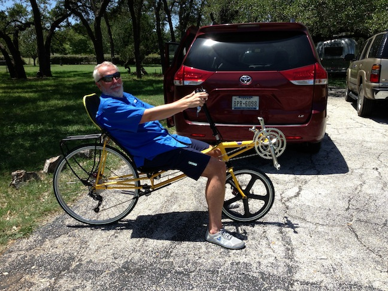
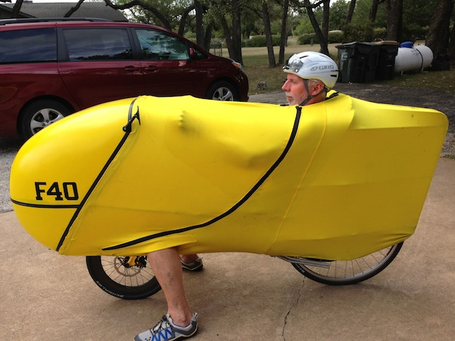
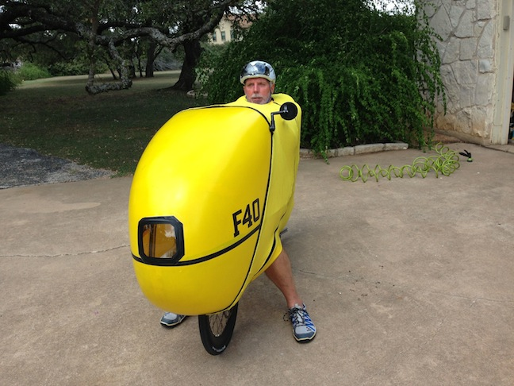
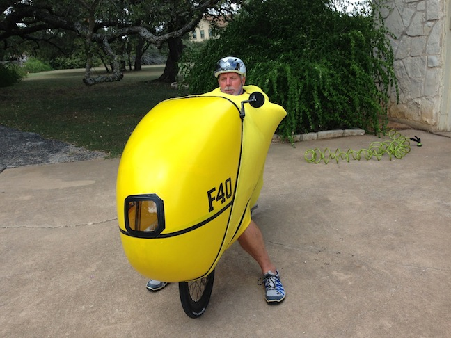
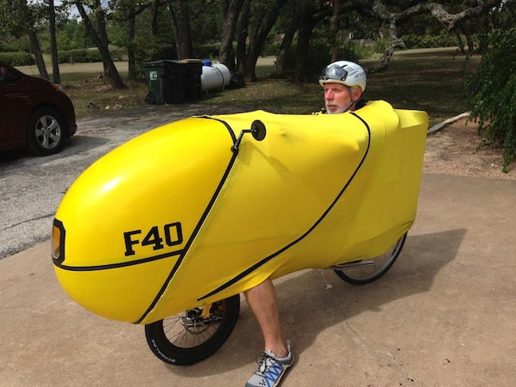

F-40 Sticking your elbow into the wind
17 Sep 2013
One of the things you read about the F-40 in high wind environments is the technique of sticking your elbow out on the windward side.
Performing this technique requires that first the bike be adjusted correctly.
Before purchasing my F-40 I asked many questions on BROL (BentRiderOnline.com) about correct positioning of hands, feet, boom, etc. and I got answers all over the map.
Looking at pictures of P-38 and F-40 setups on the web I again saw different hand/arm positions.
Basically, the question is: "Should the arms be straight like on a stick bike, or should the arms have a 90 degree angle bend at the elbow?"
The web pictures of the P-38 were split about 50/50 between straight and bent. The very vast majority (like 99%) of the F-40 pictures showed the arm bent underneath the spandex cover.
When I initially started riding my F-40 without the cover (ie a P-38) I leaned the seat back as much as possible to improve aerodynamics - this caused my arms to be straight.
Here is a picture of the initial P-38 arm position.

Putting the fairing on the P-38 to turn it into an F-40 turned out to be an issue with having the seat so reclined. Basically, in order to get the tail frame to attach to the back of the seat while also being horizontally aligned with the stays and rear derailleur required me to adjust the seat angle to the most upright position possible. If the seat is reclined at all the rear deraileur bangs into the tail frame when changing through specific gear combinations.
Here is a picture of the seat in the most upright position on the F-40. Notice that the arm position now has the elbow bent at 90 degrees (like 99% of all other pictures of F-40s on the web).

This 90 degree elbow angle turns out to be a requirement when implementing the wind gust negating maneuver of sticking your elbow out on the windward side.
Lets say that the wind is coming from your left when riding. Then the front quarter windward view looks like this:

In this position when a wind gust hits the bike the spandex stretches inwards creating a shallow bowl, thereby capturing as much wind as possible, maximizing the effects of the gust, causing the wind to significantly shove the bike to the right.
After some riding you will begin to anticipate when a gust is potentially going to happen. Breaks in houses, breaks in trees, valley at bottom of a hill, when a guard rail ends, etc., etc.. It is important when first learning to ride the F-40 that you keep the speed down below 20 mph so that you can learn to anticipate the gusts without getting blown significantly around the road in the process.
When you think a gust is going to happen rotate your elbow from the pointing down position to the sticking out to the side position - like this:

This actually does two things: 1) stops the spandex from being able to stretch inwards, and 2) causes a low pressure (venturi) effect on the windward side which helps the bike negate the coming gust.
There does not seem to be a penalty to just having your elbow stick out for no reason (outside of your arm getting tired). A lot of times if I know a gust is coming, but I not sure from which direction, I’ll stick out both elbows.
Here is another side view of the elbow sticking out - you can see the position of the elbow but it is really hard in this view to understand how far the elbow is really sticking out (ie as far as you possibly can).

The F-40 really is a different bike. I have ridden it in winds of 22 mph gusting to 28 - it is doable but very intense.